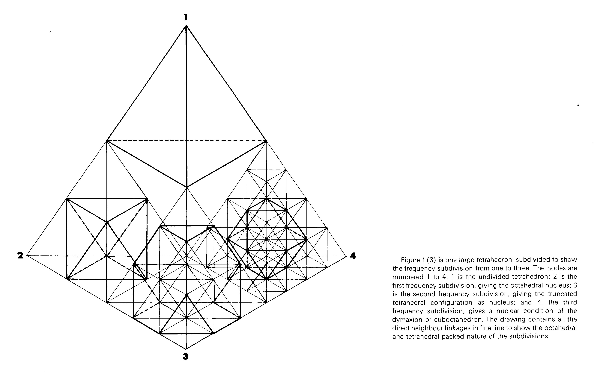
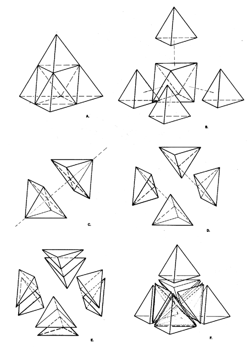

jerome arul
szasz solids
A fractured tetrahedron produces 4 more tetrahedrons of 1/2 dimension, plus 4 equal fractions of the octahedral nucleus, revealing the edges of the cuboctahedron. The szasz solid is an irregular polyhedron with integer edges. This solid was found during a Foundation Studies course at RISD taught by the late Merlin Szasz. The project consisted of building platonic polyhedra from sheet material, then stacking them. I explored the subdivision of regular tetrahedra.


A third frequency subdivision (ie. 2^3, or the edge of the large tetrahedron divded into 8) gives a nuclear condition of the cuboctahedron (aka the vector equilbrium, see #4). That cuboctahedron subdivides the nuclear octahedron from the first frequency subdivision. below image credit: keith critchlow's "order in space"
MORE NOTES: below excerpt from Synergetics. copyright Estate of R. Buckminster Fuller
Fig. 987.210 Subdivision of Tetrahedral Unity: Symmetry #1:
A. Initial tetrahedron at two-frequency stage.
B. Tetrahedron is truncated: four regular corner tetra surround a central octa. The truncations are not produced by great-circle cleavages. C, D, and E show great-circle cleavages of the central octahedron. (For clarity, the four corner tetra are not shown.) Three successive great-circle cleavages of the tetrahedron are spun by the three axes connecting the midpoints of opposite pairs of the tetra's six edges.
C. First great-circle cleavage produces two Half-Octa.
D. Second great-circle cleavage produces a further subdivision into four irregular tetra called "Icebergs."
E. Third great-circle cleavage produces the eight Eighth-Octahedra of the original octa.
F. Eight Eighth-Octa and four corner tetras reassembled as initial tetrahedron.